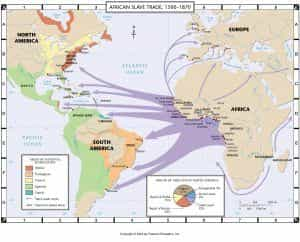

< < < Back
The Truth About Black Slavery In The Americas – Return Of Kings
The history of slavery tells us it was the entire world’s economic system for thousands of years. It did not begin and end with Anglo America. Every major ethnic group has had its hand in the sordid past of this institution. At one time or another, every ethnic group in the world has enslaved another ethnic group. It’s time the rest of the story was told, and that begins with revealing the long history of slavery in Latin America.
Since leaving Anglo America because feminism poisoned the well for traditional men, living in Latin America has shown me this area of the world needs to share the burden of the guilt of slavery. Not to mention, Africa also needs to share in the burden of slavery, where slavery and went on in most kingdoms and societies on the continent for thousands of years, and is still ongoing to this day in some African countries. There is a lot of blame to go around for this problem. It should never be used to shame and manipulate only one group of people to suit a political agenda as it is in the United States.
In Latin America, one need look no farther than the popular Salsa music genre to find the history of the brutal nature of Latin slave owners written in music. The lyrics, translated from Spanish, are eye-opening:
In the 1600s, when the tyrant ruled
In the streets of Cartagena, this history played out
There came the slave traders, with Africans in chains
They kissed the land, then perpetual slavery
An African couple, slaves of a Spanish man
He treated them very badly
And hit the Black woman
It was then, that the heroic black man rebelled
He avenged his love
And you can still hear him yelling at the gates:
Don’t hit my black woman!
The lyrics to this popular song tell a tale of a slave rebellion that happened in Cartagena, Colombia, a rebellion the puppet masters in the American media and education system would prefer never be told, as they tout the Superior Virtue of immigrants from Latin America over those WASPs they hate so much in America.
An abusive Colombian slave owner beating an African female slave doesn’t fit the narrative of large numbers of immigrants from Latin American trying to overcome oppressive “whitey.” Statistics help reveal more of the story behind the music.
Numbers

Notice most of the slave trade arrows do no point to the U.S.
It may surprise you to learn the United States was a relatively minor player in the slave trade. A full 99% of the white population never owned slaves. One could say blaming all whites for the sins of slave ownership is the modern day equivalent of blaming the entire population for the modern day sins of the elite 1% in the country. While most of use do not agree with what the elite are doing to Americans in business and in politics, those who have a disproportionate share of money, political influence, and largely control the means of production and communication make the decisions, not the rest of us.
Statistically, Mexico and Peru combined imported more slaves than the United States. Over the course of more than 350 years, of the 11.2 million slaves imported from Africa in the slave trade, only 4% of them, or 450,000 arrived in the United States. The other 96% mostly went to Latin America (including Portuguese and French colonies in the Americas), according to the highly-rated documentary Black in Latin America by Henry Louis Gates, Jr. A full one-third of slaves landed in Brazil and 60 to 70% landed in either Brazil or the Caribbean. This is easy to see when one visits the Caribbean, as on most islands the population skews heavily towards African ancestry. You would never know this from reading liberal history books.
The stereotype of the savage Southern hick acting alone as a sadistic abuser while slave owners in other countries supposedly were more humane to their slaves is also destroyed simply by reading history, rather listening to narratives designed to scapegoat one group of people. Going against the narrative that only Anglos are mean and vicious, U.S. slave owners were demonstrably more humane than their Latino counterparts, as much fewer slaves died in the U.S. than in Latin America and the Caribbean. From the Gilder Lehrman Institute of American History:
Slavery in the United States was especially distinctive in the ability of the slave population to increase its numbers by natural reproduction. In the Caribbean, Dutch Guiana, and Brazil, the slave death rate was so high and the birthrate so low that slaves could not sustain their population without imports from Africa. The average number of children born to an early nineteenth-century southern slave woman was 9.2—twice as many as in the West Indies (Caribbean).
Death rates among slaves in the Caribbean were one-third higher than in the South, and suicide appears to have been much more common. Unlike slaves in the South, West Indian slaves were expected to produce their own food in their “free time,” and care for the elderly and the infirm.
Access to freedom was greater in Latin America, but in many cases masters freed sick, elderly, crippled, or simply unneeded slaves in order to relieve themselves of financial responsibilities.
In addition to Latin America freeing more slaves but not freeing them unless they were used up and worthless, importantly, the Spanish and Portuguese colonies mixed with their slaves, making the black population not as visible as it is today in the U.S. These ethnically blended populations have helped in making the history of the practice less visible than in Anglo America, where populations did not mix. Continuing from the Gilder-Lehrman Institute:
Another important difference between Latin America and the United States involved conceptions of race. In Spanish and Portuguese America, an intricate system of racial classification emerged. Compared with the British and French, the Spanish and Portuguese were much more tolerant of racial mixing—an attitude encouraged by a shortage of European women—and recognized a wide range of racial gradations, including black, mestizo, quadroon, and octoroon. The American South, in contrast, adopted a two-category system of race in which any person with a black mother was automatically considered to be black.
The practice of racial mixing was so common in the Dominican Republic that genetic studies have revealed a majority of the population to have DNA from white European fathers and black African mothers. Colombia also reveals a high proportion of admixture between European fathers and African mothers. In other Latin nations African slaves were “absorbed” into the larger population through reproduction.
According to Black in Latin America, the integration of African peoples was so pervasive that every Mexican has an “African grandma hiding in their closet.”
So, there were far higher numbers of slaves in modern day Latin America than anybody would believe unless they studied the numbers, yet the issue isn’t as visible because of a long history of racial mixing in this part of the world.
Political Motivations

The one-sided narrative of slavery is used as a political thumbscrew
So, why are these inconvenient truths about slavery never brought up or given the light of day? Because they would destroy the grievance racket, and the elite’s thumbscrew to keep people feeling guilty and under control would be taken away.
If one listens to leftists, Anglos invented slavery, all of them were complicit in it, the United States was the only evil country that ever used this system, and turnabout is fair play so now it’s time for whites to be disenfranchised and oppressed. And moral giants that we politicians and elites are, we would never allow slavery to go on—even though slavery and indentured servitude are still practiced in the American family court system with female privilege. (And, it can be argued predatory student loans that aren’t dismissable even in bankruptcy are a form of debt bondage.)
For well over 100 years, there have been racial demagogues constantly exploiting the problem for political and financial gain. Booker T. Washington, a leading voice of former slaves and their descendants wrote:
There is another class of colored people who make a business of keeping the troubles, the wrongs, and the hardships of the Negro race before the public. Having learned that they are able to make a living out of their troubles, they have grown into the settled habit of advertising their wrongs — partly because they want sympathy and partly because it pays. Some of these people do not want the Negro to lose his grievances, because they do not want to lose their jobs.
I am afraid that there is a certain class of race-problem solvers who don’t want the patient to get well, because as long as the disease holds out they have not only an easy means of making a living, but also an easy medium through which to make themselves prominent before the public.
My experience is that people who call themselves “The Intellectuals” understand theories, but they do not understand things. I have long been convinced that, if these men could have gone into the South and taken up and become interested in some practical work which would have brought them in touch with people and things, the whole world would have looked very different to them. Bad as conditions might have seemed at first, when they saw that actual progress was being made, they would have taken a more hopeful view of the situation.
In other words, exploiting the problem and framing it as Hollyweird and the corrupt media have is profitable and makes for a powerful political weapon to use against the masses, especially when one desires keeping a nation racially divided. All while the elite expects everyone to remain willfully ignorant of the fact slavery has been a worldwide institution for thousands of years – and is still ongoing in parts of Africa, namely Chad, Congo, Madagascar, Mali, Mauritania, Niger, and Sudan.
The history of slavery in Latin America—which has a far more expansive history than slavery in the U.S.—can no longer be ignored. There’s a lot of blame to go around, and it’s time to stop scapegoating one group of people for crimes that all of humanity participated in, and some countries are still participating in to this day!
Read More: Slavery Practices Throughout History